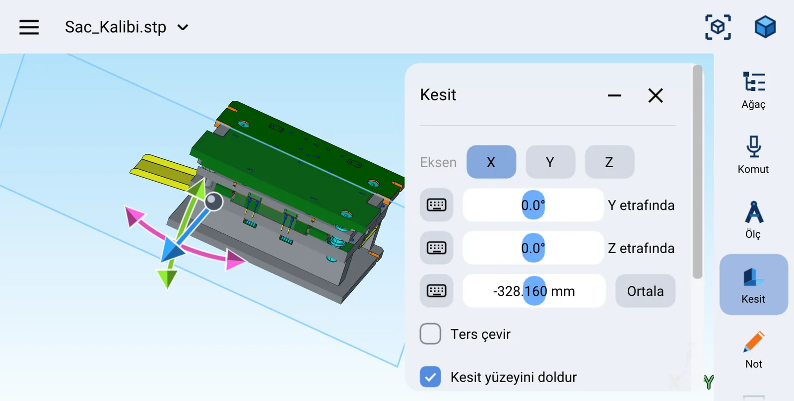
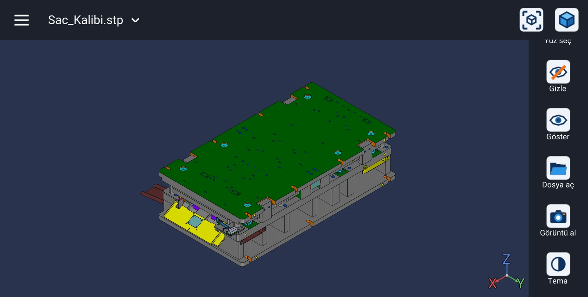
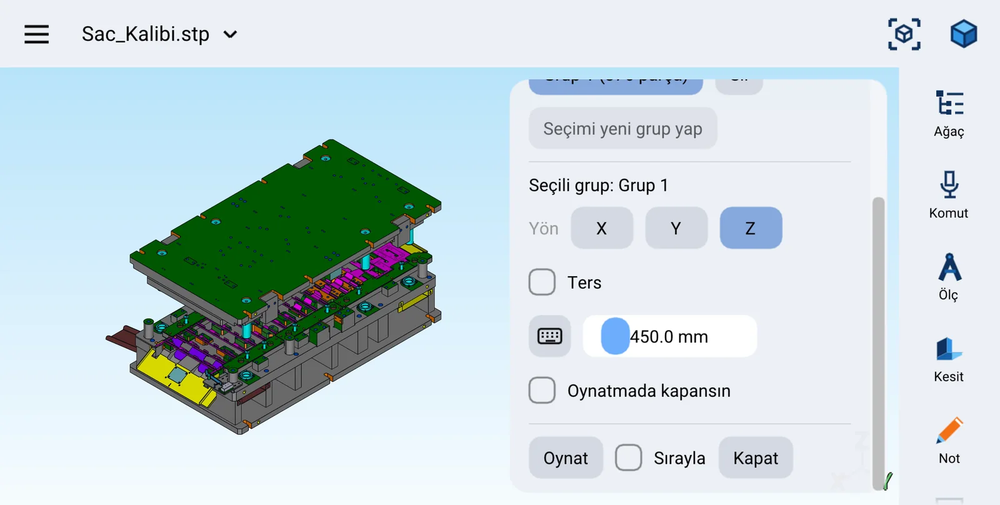
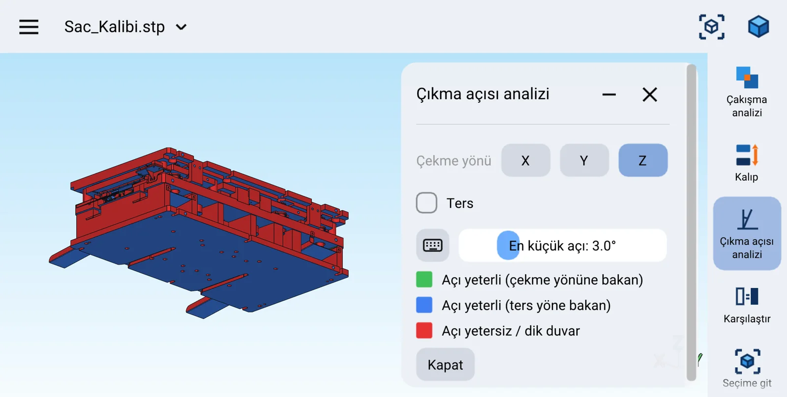
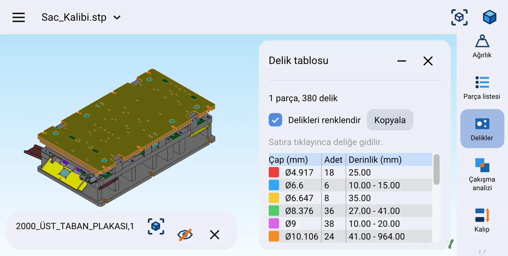
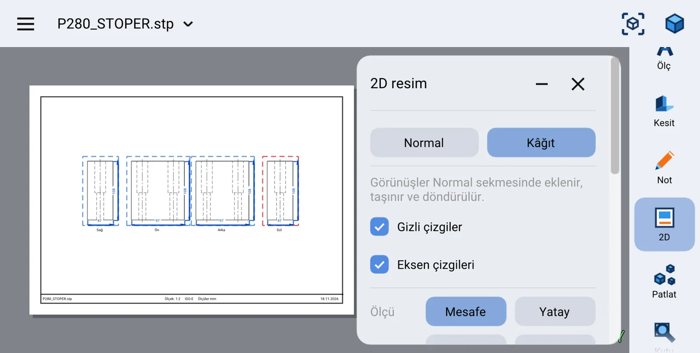

Measurement, mass and stock size
Measure by picking vertices, edges or faces. Bounding box, stock size, surface area, volume, mass and center of gravity in one panel; you set the material and machining allowance.
Open STEP, CATIA, SOLIDWORKS, NX and more on your phone and tablet. Measure, section, analyze and create 2D drawings. Your files never leave your device.


Opens the major CAD and mesh formats natively
.CATPart .CATProduct.sldprt .sldasm.prt.prt.N.stp .step.igs .iges.x_t.jt.3dxml.stl.obj.wrlIn meetings, on the shop floor, on site. Rotate, measure and inspect a single part or an assembly with hundreds of parts, smoothly. No other CAD software needed.
Measure by picking vertices, edges or faces. Bounding box, stock size, surface area, volume, mass and center of gravity in one panel; you set the material and machining allowance.
Groups the holes of the selected part by diameter; lists diameter, count and depth and shows each diameter in its own color on the model. Copy the table with one tap.
Cut the model with an X, Y or Z plane and tilt it. Explode the assembly with a single slider.
Create dimensioned drawings from six views. A4 or A3; save as PDF or DXF.
Add arrows, text and cloud markups. Each page keeps its camera view; collect them all in one PDF report.
List unique parts with quantity, stock size, unit and total mass; save as CSV for Excel.
Find a part by name. Hide it, make it transparent, isolate the selection or open it in a new tab.
Shaded, wireframe and hidden line; perspective or orthographic projection; standard views.
Save the open model as STEP, IGES, 3DXML, OBJ, VRML or STL.
One app, two screens. Rotate with one finger, pan and zoom with two; long-press for the context menu.
More than a viewer. Review designs at the meeting table, at the machine or at the customer's site.
Move the section plane along X, Y or Z and tilt it around two axes. Show the cut face filled or hatched and see at once how many parts were cut.
Explode the assembly outward from its center with a single slider. Select, inspect and screenshot parts in the exploded view.

Group the moving parts and give each group a direction and stroke. Play opens the die from closed and closes it again.

Choose the pull direction and the minimum angle. Green is sufficient, blue is sufficient in the opposite direction, red is insufficient or a vertical wall.

Check visible parts with an adjustable tolerance. Clashing pairs are listed with their depth and clash regions are drawn in red on the model.

Holes in the selected part are grouped by diameter: diameter, count and depth. Each diameter shows in its own color on the model.

Create a drawing from the front, back, left, right, top or bottom view and add distance, horizontal, vertical and diameter dimensions.

Compare the model with an older version; added, deleted, changed and moved parts are color-coded.
Create the flat pattern of a bent sheet metal part and save the cutting drawing as DXF.
No need to hunt through menus. Type what you want in the command box or say it into the microphone, in Turkish; ÇİZEN Viewer Max does the rest.
Speech is transcribed by your device's own recognizer. Audio is not recorded and is never sent anywhere.
“önden” (front) · “üstten” (top) · “izometrik” (isometric) · “sığdır” (fit)
“X ekseninde kesit al” (section on the X axis) · “patlat” (explode) · “toparla” (collapse)
“1005’i gizle” (hide 1005) · “sadece pimi göster” (show only the pin) · “hepsini göster” (show all)
“ölç” (measure) · “çakışma analizi” (clash analysis) · “parça listesi” (parts list) · “teknik resim” (drawing)
Built for people who work with confidential designs. ÇİZEN Viewer Max never uploads your files to any server; opening, measuring and analyzing happen on your device.
Read the Privacy PolicyCAD files are opened only on your device; they are never sent to us or to any other server.
Voice commands are transcribed on your device; audio is neither stored nor sent.
You don't need to sign up or give us your email address.
The app contains no advertising, usage analytics or tracking tools. The internet is used only to verify your subscription.
Every format and every tool in every plan. Try it free for 3 days first.
Pick the plan that suits you. Current prices are shown in the app and in the store, in your country's currency and including taxes.
The app's interface and voice commands are currently in Turkish. Subscriptions renew automatically at the end of each period; cancel any time in your store settings. Cancel during the trial and you are not charged; the store decides trial eligibility. Details: Terms of Use.
STEP (.stp, .step), IGES (.igs, .iges), Parasolid (.x_t), JT (.jt), 3DXML (.3dxml), SOLIDWORKS (.sldprt, .sldasm), NX (.prt), Creo (.prt.N) and CATIA V5 (.CATPart, .CATProduct), plus the STL, OBJ and VRML mesh formats. For a CATIA assembly, select the CATProduct file together with its parts (.CATPart).
No. Your files are opened and processed only on your device; they are never sent to us or to any other server. The PDF, DXF, CSV and image files you save also stay on your device.
The internet is used only to verify your subscription. Your files are never sent anywhere while you open or inspect them.
iPhone and iPad with iOS and iPadOS 17 or later, and Android phones and tablets with Android 11 or later. On Android, a 64-bit device with OpenGL ES 3.2 is required. One app fits both phone and tablet.
Voice commands use the device's own on-device speech recognizer: Android 12 or later is required on Android, and on iPhone, iPad and Android the device must support on-device recognition. On other devices you can type the command instead.
The app's interface and voice commands are currently in Turkish. This website and its legal pages are also available in English.
Eligible users get a one-time 3-day free trial; the store decides eligibility. Cancel during the trial and you are not charged; otherwise your chosen plan begins.
On iPhone and iPad: Settings → [your name] → Subscriptions. On Android: Google Play → Profile → Payments & subscriptions → Subscriptions. Cancellation takes effect at the end of the current period.
Write to bilgi@mubitek.com and we will get back to you as soon as possible.
Write to us to hear when we launch on Google Play, or about business use.